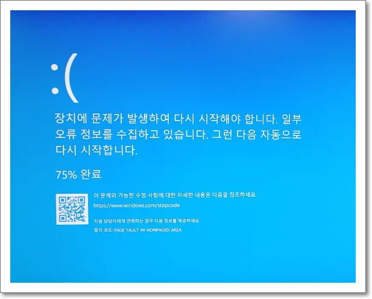

에러 코드 상세
0x00000050 · PAGE_FAULT_IN_NONPAGED_AREA
시스템이 메모리에 상주해야 할 데이터를 찾지 못하고 디스크에서 읽으려다 실패했을 때 나타납니다.

드라이버 결함과 램 불량이 가장 흔한 두 원인으로 꼽힙니다.
이 코드를 어떻게 해석해야 하나요?
메모리 관련 코드는 RAM 자체뿐 아니라 잘못된 메모리 주소를 사용한 드라이버, 페이지 파일, 저장장치 오류와 함께 나타날 수 있습니다. 코드가 매번 바뀌는지도 중요한 단서입니다.
먼저 기록할 내용: 0x00000050가 발생한 시각, 직전에 실행한 작업, 최근 설치한 드라이버·업데이트, 재부팅 뒤 같은 코드가 반복되는지를 적어 두세요.
가능성 높은 원인
- 최근 설치한 드라이버가 메모리 주소를 잘못 참조하는 경우
- 램 모듈 접촉 불량이나 물리적 결함이 있는 경우
- 바이러스 백신 등 커널 모드로 동작하는 보안 소프트웨어와의 충돌
- 디스크 캐시나 파일 시스템 손상으로 필요한 데이터를 읽지 못하는 경우
- 메모리 오버클럭으로 인한 불안정
첫 점검 항목
- 장치 관리자에서 최근 업데이트되거나 설치된 드라이버(특히 그래픽, 네트워크, 저장장치)를 확인하고 이전 버전으로 롤백해 보세요.
- 메모리 진단 도구로 램 상태를 점검하고, 가능하면 램을 하나씩 꽂아 테스트해 보세요.
- 최근 설치한 보안 프로그램의 차단 기록과 예외 설정을 먼저 확인하세요. 제거·비활성화는 복원 지점을 확보한 뒤 짧은 원인 분리 테스트로만 사용하고, 즉시 보호 기능을 다시 켜세요.
- 명령 프롬프트에서 chkdsk /f 를 실행해 디스크 오류를 점검하고 수정하세요.
- 오버클럭 설정이 있다면 기본값으로 되돌린 뒤 안정성이 개선되는지 확인하세요.
확인 결과에 따른 다음 단계
- 드라이버 롤백으로 해결될 때 — 재발 여부만 지켜보면 됩니다.
- 메모리 진단에서 오류가 발견될 때 — 해당 모듈을 교체하세요.
- chkdsk로도 해결되지 않을 때 — 보안 프로그램을 다른 제품으로 교체하는 것을 검토하세요.
데이터와 시스템을 보호하는 주의사항
메모리 검사가 한 번 통과했다고 즉시 정상으로 단정하지 말고 XMP·EXPO 해제 상태와 모듈별 결과를 비교하세요.
앞 단계로 해결되지 않을 때
모듈을 한 개씩 기본 속도로 장착해 슬롯을 교차하고, 안전 모드와 클린 부팅에서 같은 작업이 재현되는지 확인하세요.
시스템 복구나 초기화, 드라이버 삭제처럼 원상복구가 힘든 작업을 시작하기 전에, 중요한 파일은 미리 외장 저장장치나 별도 위치에 백업해 두세요.
같은 증상과 연결된 다른 오류 코드
- 0xC000021A · Critical System Process 종료
- 0x000000EF · CRITICAL_PROCESS_DIED
- 0x000000D1 · DRIVER_IRQL_NOT_LESS_OR_EQUAL
- 0x0000003B · SYSTEM_SERVICE_EXCEPTION
공식 참고자료
자주 묻는 질문
- 블루스크린 코드가 한 번 떴는데 계속 지켜봐야 하나요? 이 문제(0x00000050)가 한 번만 발생했다면 즉시 부품을 교체하기보다 재현 여부와 최근 변경 사항을 먼저 기록해두는 것으로 충분합니다. 반복된다면 그때 하드웨어 점검 범위를 넓히세요.
- 최근에 설치한 프로그램이 원인일 수도 있나요? 네, 최근 설치한 드라이버나 소프트웨어가 원인인 경우가 많아 시스템 복원 지점으로 되돌리는 것도 방법입니다.
- 이 코드는 특정 드라이버와 관련이 많나요? 특히 그래픽·네트워크·저장장치 드라이버가 자주 지목되므로 이 세 종류를 우선적으로 점검하는 것이 효율적입니다.
최종 검토일: 2026-08-19